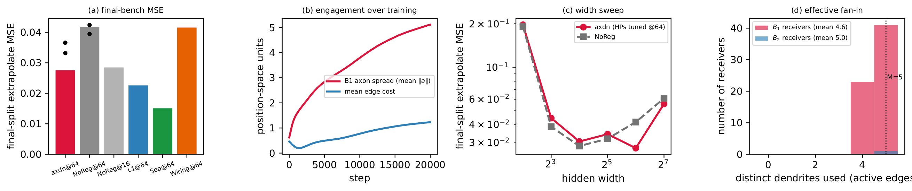
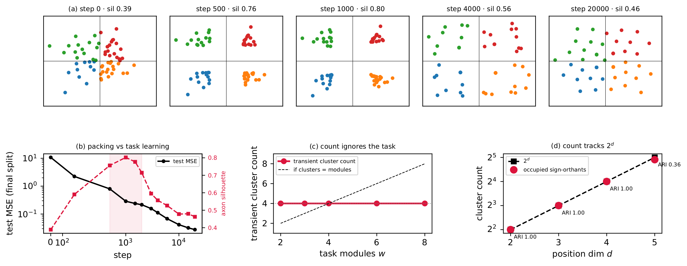
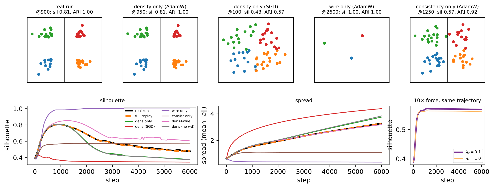
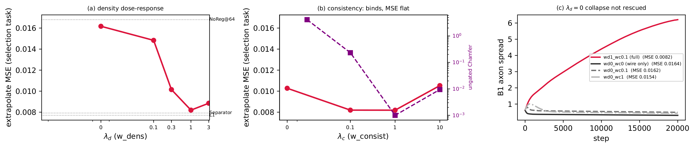
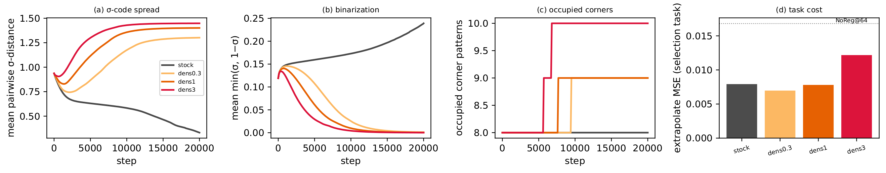

TL;DR. The axon–dendrite prior — one axon and \(M\) dendrite positions per neuron, weights priced by axon-to-nearest-dendrite distance — is a correct asymmetric generalization of WiringPrior (it reduces to it at \(M{=}1\)). On flat_modular it works as a mild capacity governor: it beats NoReg@64 (\(0.0276\) vs \(0.0417\)) and its always-on density term keeps the geometry from collapsing. But it is not the decomposer the proposal imagined. Its coordinates never enter the forward pass, so they get no gradient from the task (\(\partial\,\mathrm{MSE}/\partial(a,D)\equiv0\)); their organization is set by regularizer force × optimizer, not by the task. The axons quantize onto the \(2^d\) sign-orthants (optimizer geometry, not modules); the module subspaces are rotated and distributed (axis-mass \(0.25\), not neuron-aligned); the fan-in cap binds geometrically yet its stringency earns no MSE. refuted as a disentangler — retained as a baseline.
The recurring character in this forensic study is a fact the prior shares with Separator's codes and the symmetric WiringPrior: the learned geometry receives no gradient from task performance. Companion: the flat-forensics report; executable figures live in the study's analysis.ipynb. (“axon”/“dendrite” are ML labels for output/input ports — not the biological objects.)
1. Setup
Task, model, training. flat_modular: four disjoint sinusoidal modules on \(z\in\mathbb{R}^8\) plus 16 nuisance dims, \(y\) standardized, \(n{=}2048\), train range \(r{=}0.7\). MLP \(24\!\to\!64\!\to\!64\!\to\!1\), GELU, \(5{,}825\) parameters; AdamW (\(\eta{=}10^{-3}\), weight decay \(0.01\)), batch \(200\), \(20\text{k}\) steps, deterministic. Two benches, never mixed within a figure: the final task (task_seed=4242, extrapolate split) for headline numbers; the disjoint selection task (task_seed=2026, extrapolate split — the HP bench) for the ablation, attribution, and transfer experiments. Train seed 1, with seeds 2–3 added for the headline.
Method. Every neuron \(i\) owns one axon \(a_i\in\mathbb{R}^d\) (output port) and \(M\) dendrites \(D_i\in\mathbb{R}^{M\times d}\) (input ports); \(d{=}2\), \(M{=}5\). Inputs only send, the output only receives; hidden neurons own both. The directed edge \(j\!\to\!i\) costs the distance from \(j\)'s axon to \(i\)'s nearest dendrite, and the wiring penalty prices the actual weights by it:
\[\begin{equation}\label{eq:wire} c(j\!\to\!i)=\min_{m\le M}\,\lVert a_j-D_{i,m}\rVert_2,\qquad \mathcal{R}_{\mathrm{wire}}=\frac1L\sum_{\ell}\operatorname*{mean}_{i,j}\,\bigl|W^{(\ell)}_{ij}\bigr|\;c(j\!\to\!i). \end{equation}\]One axon can serve any number of receivers (free fan-out); the \(\min\) over \(M\) dendrites means a receiver reads cheaply from at most \(M\) distinct axon clusters (bounded fan-in) — the cost is deliberately not a metric. Two auxiliary priors act on the hidden boundaries: consistency (close axons carry similar dendrite sets; \(\mathrm{Cham}\) is the symmetrized directed Hausdorff distance) and density (Gaussian repulsion on axons — the anti-collapse term, since \(\mathcal{R}_{\mathrm{wire}}\) is a pure alignment objective whose global minimum includes all-positions-coincident):
\[\begin{align}\label{eq:aux} \mathcal{R}_{\mathrm{con}}&=\operatorname*{mean}_{b\,\in\,\mathrm{hidden}}\ \operatorname*{mean}_{i\ne j}\, e^{-\lVert a_i-a_j\rVert/\gamma}\,\mathrm{Cham}(D_i,D_j),\qquad \mathcal{R}_{\mathrm{dens}}=\operatorname*{mean}_{b\,\in\,\mathrm{hidden}}\ \operatorname*{mean}_{i\ne j}\, e^{-\lVert a_i-a_j\rVert^2/2\sigma^2},\\[2pt] \mathrm{loss}&=\mathrm{MSE}\bigl(f_W(x),\,y\bigr) + c\,\bigl[\,\mathcal{R}_{\mathrm{wire}}+\lambda_c\mathcal{R}_{\mathrm{con}}+\lambda_d\mathcal{R}_{\mathrm{dens}}\,\bigr], \quad c=3{\times}10^{-2},\ \lambda_c=0.1,\ \lambda_d=1,\ \gamma=\sigma=1 . \end{align}\]Positions are ordinary parameters in the same AdamW, initialized \(\mathcal{N}(0,0.5^2)\). At \(M{=}1\) the family degenerates to the symmetric single-position WiringPrior (verified to \(10^{-7}\)). The structural fact: predictions are \(f_W(x)\) — positions never enter the forward pass, so \(\partial\,\mathrm{MSE}/\partial(a,D)\equiv0\); the only forces on the geometry are \(c\,\nabla\mathcal{R}\) and the decay step. Separator's codes obey the same equation; §3 turns this into an experiment.
HPs and budget. The axdn op-point comes from a ~22-configuration local search on the selection bench (spanning \(c\), \(M\), \(d\), pen, soft-min \(\tau\), \(\sigma\), \(\lambda_d\), \(\lambda_c\)); it keeps the proposal's default \(M{=}5\) (\(M{=}3\) and \(c{=}0.1\) scored within single-seed noise of it: \(0.0074/0.0078\) vs \(0.0082\)). The baselines carry their winners from the larger production HP grid, so budgets are not equal: the NoReg comparison is robust to this (NoReg has no regularizer HPs and shares all training HPs), but the ranking against L1/Separator is not an equal-budget claim.
2. It works — as a capacity governor, not a decomposer
Headline (final bench, Fig. 1a). axdn@64 reaches \(0.0276\) (seeds 2–3: \(0.033\), \(0.037\)) vs NoReg@64 \(0.0417\) (\(0.039\), \(0.042\)) — the win holds at every seed (3/3 paired, mean gap \(0.009\)), though seed 1 flatters its size — and it beats the symmetric WiringPrior@64 (\(0.0416\)), which collapses to a point and becomes NoReg in every metric we measure (Table 1). Mid-pack overall: below L1 (\(0.0226\)) and Separator (\(0.0151\)), \(\approx\) NoReg@16 (\(0.0285\)). Three mechanisms lie behind the number.
(i) The geometry stays engaged — because the density term holds it open. The \(B_1\) axon spread (mean \(\lVert a\rVert\)) grows \(0.6\!\to\!5.1\) and the mean edge cost \(0.46\!\to\!1.23\) (Fig. 1b; final axon-density kernel \(0.05\), collapse \(=1\)) — unlike Separator's dissolving codes, this geometry is alive at 20k. Remove the density term and the familiar failure returns (spread \(0.62\!\to\!0.30\), MSE at NoReg level, §4).
(ii) Bounded fan-in binds geometrically — but its degree is inert (Fig. 1d). Receivers route ~30 active in-edges through \(4.6/5.0\) distinct dendrites (\(B_1/B_2\)), the constraint saturating at \(M\). The asymmetry pays a one-time gain over the symmetric case (\(M{=}1\), WiringPrior + density: \(0.0132\) vs \(0.0082\) for \(M{=}5\), selection bench), but the amount of fan-in headroom does not: sweeping \(M\in\{2,\dots,8\}\) tightens the constraint yet leaves MSE flat (§5) — binding is real, its stringency is not load-bearing.
(iii) The value is concentrated in the over-parameterized regime (Fig. 1c; HPs held at their width-64 values for all widths, so axdn's off-64 points are un-tuned). At widths 4–32 axdn tracks NoReg (\(0.197\) vs \(0.192\) at width 4; \(0.031\) vs \(0.029\) at 16), then separates exactly where NoReg's U-curve degrades (\(0.0276\) vs \(0.0417\) at 64, \(0.0557\) vs \(0.0609\) at 128) — the companion's capacity-governor profile, milder at both ends: no damage at width 4 (Separator: \(0.62\)), less compression at 64 (participation ratio \(h_1\approx15\) vs Separator's \(6.4\); nuisance suppression \(2.2\) vs \(3.9\), L1 \(\approx27\)).

What it does not do is decompose. Same subspace pipeline as the companion (causal input-block perturbations → PCA → patching): per-module dimensionality \(q^{90}{=}(10,9,9,10)\) and cross-module overlap \(0.278\) are indistinguishable from NoReg@64 (\((12,9,9,11)\), \(0.284\)), far from Separator's compact \((3,4,3,3)\), \(0.026\); patching \(R^2\) \(0.56\) vs NoReg's \(0.54\). The axons are not the variables: same-module neurons do not share axon locations (within/between-module axon-distance ratio \(0.94\)–\(0.95\)). And on the hidden-unit basis — the neuron basis the proposal is really claiming — the modules' axis-mass (mean over each module subspace's principal axes of the largest single-neuron energy share: \(1\) if a module is borne by one neuron, \(1/64{=}0.016\) if spread evenly over all units) is \(0.25\) (per module \(0.20\)–\(0.30\)): a factor \(\sim4\) below the \(1.0\) of a neuron-aligned module, and only \(\sim2.3\times\) the \(0.11\) of a same-rank random rotation — the modules are rotated, distributed mixtures of \(\sim9\)–\(10\) neurons, not written along neuron axes (the hidden-basis twin of the axon-space \(\mathrm{ARI}\approx0\)). Functional additivity (Sobol \(\sum_k S_k=0.957\)) matches every well-fit model — task-forced, not method-specific. The proposal's “axon = emitted variable” intuition fails for the same reason the companion's codes read \(\mathrm{ARI}\approx0\): the modules live in rotated subspaces, which no per-neuron point (or code) can express — and with no task gradient, the geometry has no channel through which the modules could reach it even in principle.
| model | test MSE | Sobol \(\sum_k S_k\) | \(q^{90}\) (\(S_1..S_4\)) | h1 overlap | sig/nuis \(|W_0|\) |
|---|---|---|---|---|---|
| axon–dendrite @64 | \(0.0276\) | \(0.957\) | \(10,9,9,10\) | \(0.278\) | \(2.2\) |
| WiringPrior @64 (\(M{=}1\), collapsed) | \(0.0416\) | \(0.958\) | \(12,9,9,11\) | \(0.284\) | — |
| NoReg @64 | \(0.0417\) | \(0.958\) | \(12,9,9,11\) | \(0.284\) | \(\approx2.5\) |
| NoReg @16 | \(0.0285\) | \(0.965\) | \(1,2,2,2\) | \(0.043\) | — |
| L1 @64 | \(0.0226\) | \(0.961\) | \(3,3,3,2\) | \(0.043\) | \(\approx27\) |
| Separator @64 | \(0.0151\) | \(0.959\) | \(3,4,3,3\) | \(\mathbf{0.026}\) | \(3.9\) |
3. The transient packing — and what causes it
The observation (Fig. 2a): the winner's axons start as a Gaussian blob, snap into four tight clusters by step ~1k, then blur away (silhouette \(0.80\!\to\!0.46\)). Four clusters, four task modules — module discovery? No, on three counts. Timing: the packing peaks while the task is still unlearned (test MSE \(0.29\) at step 1k vs \(0.0276\) final, Fig. 2b), and each axon's cluster identity is sign-locked by step 200. Content: at the peak, ARI between cluster membership and the neurons' module assignment is \(-0.18\) (\(\approx\) chance); patching the clusters' subspaces explains nothing (\(R^2\lt0\)). Causes: retrain with \(w\in\{2,3,4,6,8\}\) modules — the count stays exactly 4 (Fig. 2c); change the position dimension and it tracks \(2^d\): the clusters sit on the sign-orthants of position space, ARI \(=1.0\) for \(d{=}2,3,4\) (Fig. 2d; at \(d{=}5\) the 64 axons dilute over 32 orthants, ARI \(0.36\)). “Four clusters = four modules” was a coincidence between \(2^d\) at \(d{=}2\) and \(w{=}4\).

Attribution by replay. If the task doesn't set the geometry, what does? Because \(\partial\,\mathrm{MSE}/\partial(a,D)\equiv0\), the geometry is a closed system given the weights: \((a,D)\leftarrow\mathrm{opt}(c\,\nabla\mathcal{R}(a,D;W(t)))\). So we replay the recorded \(W(t)\) through the real compute() from the run's own step-0 positions, toggling each term (wire ⇔ replayed vs zeroed \(W\); \(\lambda_c,\lambda_d\)) and the optimizer. The full replay reproduces the live run exactly — peak step 900 vs 900, silhouette \(0.806\) vs \(0.807\), final spread \(3.28\) vs \(3.28\) — validating the approach and proving the decoupling: nothing the task does reaches the geometry except through \(W\). The matrix (Fig. 3) then decomposes the phenomenon.
Density alone recreates the packing (peak sil \(0.81\), ARI \(1.0\)) — wire and consistency are unnecessary. AdamW is necessary: step-size-matched SGD on the same density objective spreads the axons but never quantizes them (sil \(0.43\), late ARI \(0.34\)); Adam's per-coordinate \(\pm\eta\) steps turn any sustained outward force into motion along the \(2^d\) diagonal sign directions \((\pm1,\dots,\pm1)/\sqrt d\) — the corners of position space, one per sign-orthant. Without density nothing spreads: wire-only collapses into duplicate micro-clumps (spread \(0.36\); its silhouette \(\approx1.0\) is the degenerate duplicate-point value), consistency-only yields faint fuzz (sil \(0.57\)) — and Adam erases the force's magnitude: \(\lambda_c{=}0.1\) and \(\lambda_c{=}1.0\) produce identical trajectories (Fig. 3, right); the form of the force field matters, its strength almost does not. The dissolution is density's own second act: with density alone the tight corners still blur (late sil \(0.40\)) as the uniformity drive fans points out within their quadrants (sign identity stays locked, ARI \(0.9\)–\(1.0\)); wire re-concentrates late (\(0.63\) vs \(0.40\)); weight decay is a bystander. So the packing is created by density × AdamW and dissolved by density itself — optimizer geometry end to end. Density emerges as the one term with a real job; the next two sections take that lead.

4. In vivo, density is also the only term that earns MSE
Selection bench, one knob at a time (Fig. 4). Density shows a clean dose-response: \(\lambda_d{=}0\to0.0162\)–\(0.0164\) (\(=\) NoReg@64's \(0.0168\) — the regularizer switches off), \(0.1\to0.0148\), \(0.3\to0.0101\), \(1\to0.0082\), \(3\to0.0089\); final spread rises \(0.5\to8.3\) in lockstep. Consistency is the instructive null: geometrically it works perfectly — at \(\lambda_c\ge1\) the ungated dendrite-set Chamfer drops \(4.13\to0.00\), i.e. all 64 neurons carry identical dendrite sets, one shared 5-port bus — yet MSE (\(0.0103/0.0082/0.0082/0.0105\) across \(\lambda_c\in\{0,0.1,1,10\}\)) and effective fan-in (4–5) do not move beyond single-seed noise. A constraint can bind geometrically and still be functionally vacuous. Nor can it replace density: at \(\lambda_d{=}0\) the collapse proceeds for every \(\lambda_c\) (spread \(\le0.49\); Fig. 4c) — its gate \(e^{-\lVert\Delta a\rVert/\gamma}\) is weakly axon-repulsive, but §3 showed why that cannot help: under Adam only the form of the force matters, and the gate's repulsion dies as soon as it opens.

5. Fewer dendrites tighten the fan-in constraint — and change nothing
A natural worry about the op-point: \(M{=}5\) dendrites on a task with only four subfunctions (four \(2^d\) axon clusters at \(d{=}2\)) may leave the fan-in cap slack — a receiver drops one dendrite near every cluster, the \(\min\)-over-\(M\) wiring cost is met for free, and the regularizer quietly reduces to NoReg; if so, \(M{=}2,3\) (which cannot cover four clusters) should bite. We re-ran the op-point across \(M\in\{2,3,4,5,8\}\) on both benches (final: seeds 1–3 for \(M{=}2,3\); selection: the extrapolate re-eval). The worry is half right. The constraint does tighten monotonically as \(M\) shrinks — the achieved \(|W|\)-weighted wiring cost \(\mathcal{R}_{\mathrm{wire}}\) rises \(0.0025\!\to\!0.0062\) and effective fan-in falls \(6.2\!\to\!2.0\) from \(M{=}8\) to \(M{=}2\) (Table 2) — so at \(M{=}5\) the cap is nearly non-binding and at \(M{=}2\) it binds hard. But the payoff does not respond: test MSE is flat across the whole range, within single-seed noise on both benches (\(0.027\)–\(0.032\) final, \(0.0074\)–\(0.0103\) selection), with no trend and no advantage at the tight end. Forcing fan-in to bind buys nothing. This is the fan-in twin of the consistency null (§4): a wiring constraint can bind geometrically — here, with fan-in provably tracking \(M\) — and still be functionally vacuous, because the geometry it shapes never sees the task gradient (\(\partial\,\mathrm{MSE}/\partial(a,D)\equiv0\)). Stringency is not the missing ingredient; a gradient path is.
| \(M\) (dendrites/neuron) | 2 | 3 | 4 | 5 | 8 |
|---|---|---|---|---|---|
| \(\mathcal{R}_{\mathrm{wire}}\) (achieved, \(\downarrow{=}\) slacker) | \(0.0062\) | \(0.0052\) | \(0.0045\) | \(0.0033\) | \(0.0025\) |
| effective fan-in (\(B_2\)) | \(2.0\) | \(3.0\) | \(3.8\) | \(4.6\) | \(6.2\) |
| MSE, selection (extrapolate) | \(0.0099\) | \(0.0074\) | \(0.0103\) | \(0.0082\) | \(0.0093\) |
| MSE, final (seed-mean) | \(0.0286\) | \(0.0283\) | \(0.0273\) | \(0.0324\) | \(0.0288\) |
analyze_dendsweep.py.6. The density term transfers to Separator
Density's job is anti-collapse — and Separator's codes collapse on this very bench (the companion's subject), under the same no-task-gradient equation. So we port the term: Separator now accepts the identical Gaussian kernel on its multihot \(\sigma\)-codes (w_dens, per hidden boundary and channel), compared against stock dchn at \(\lambda_d\in\{0.3,1,3\}\) on the selection bench (Fig. 5). It works: the collapse stops (mean pairwise \(\sigma\)-distance \(0.94\!\to\!1.30\)–\(1.45\) vs stock's \(\to0.33\)) at zero or negative task cost (\(0.0070\) at \(\lambda_d{=}0.3\) vs stock \(0.0079\); \(0.0122\) at the overdosed \(\lambda_d{=}3\)). And the corner-quantization of §3 reappears in code space — here a corner is a vertex \(b\in\{0,1\}^8\) of the code hypercube, every coordinate of \(\sigma\) saturated to exactly \(0\) or \(1\) — and it is persistent: mean \(\min(\sigma,1{-}\sigma)\to0.000\) with only ~9 distinct binary codes across the 64 neurons, because saturation freezes the wire pull (\(\partial\mathcal{R}_{\mathrm{wire}}/\partial z\propto\sigma'(z)\to0\) at the corners) while position space has no such freeze. Same force, same optimizer, different fixed-point structure — set by the representation's bounded vs unbounded geometry, and in neither case by the task.

7. Conclusion
A coherent proposal that does real work — a correct asymmetric generalization of WiringPrior whose fan-in binds geometrically (though its stringency earns no MSE, §5), whose density term solves the collapse by construction and even transfers to Separator — but as a mild capacity governor, not a decomposer: NoReg-like subspaces, axons that never encode the modules, and a cluster structure that is the optimizer's \(2^d\) sign-orthants. The root cause is shared across the family (axdn/WiringPrior positions, Separator codes): the representation receives no gradient from task performance (\(\partial\,\mathrm{MSE}/\partial\pi\equiv0\)), so its organization can only ever be the fixed-point geometry of regularizer force × optimizer — sign-orthants in \(\mathbb{R}^d\), hypercube corners in \([0,1]^K\) — with the task reaching \(\pi\) only through the slow shadow of \(W\). Such a \(\pi\) can price \(W\) (the MSE gains) but cannot discover structure; a geometry meant to express the task must sit in the gradient path — positions in the forward pass (cf. NeuroPos, where \(w_{ij}=1/\lVert p_i-p_j\rVert\) is the weight) or codes that gate activations rather than price weights.